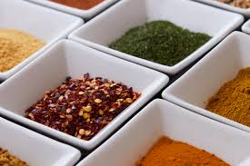

Home
Taco Seasoning

This taco seasoning tastes better than anything bought premade from the store
It's easy to make this taco seasoning, and well worth it. It takes almost no time to put together, uses ingredients you should already have on hand, and is cheaper and tastes better
than the stuff that comes in the packets.
Ingredients
- 1 tbsp chili powder
- 1 tbsp cumin
- 1 tsp smoked paprika
- 1/4 tsp cayenne pepper
- 1/2 tsp oregano
- 1/2 tsp salt
- 1/2 tsp (15 cranks) fresh ground black pepper
Steps
- Combine everything in a small bowl and stir until evenly mixed. Use immediately, or store in an air-tight container, away from heat and sunlight, until ready to use.